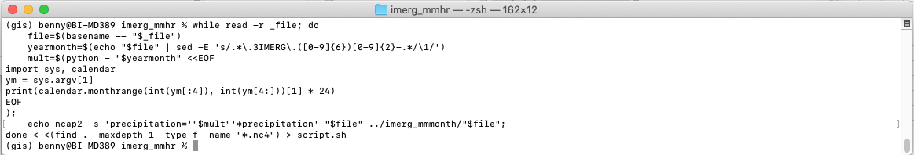
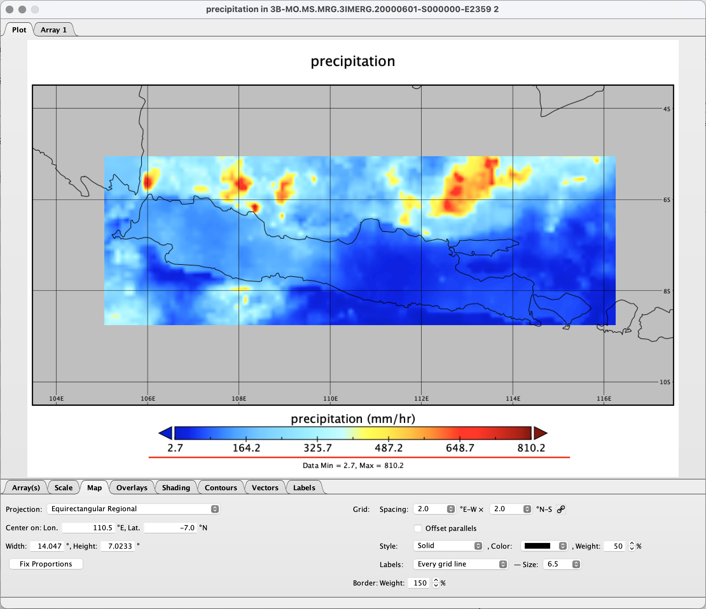

Monthly IMERG in netCDF format
Contents
Monthly IMERG in netCDF format#
This section will explain on how to download IMERG monthly data in netCDF format and prepare it as input for SPI calculation.
Download monthly IMERG data from GES DISC#
Using a web browser, go to NASA Goddard Earth Sciences (GES) Data and Information Services Center (DISC): https://disc.gsfc.nasa.gov/.
Type “IMERG” in the search bar and click on the search.
Select IMERG Version 6 Level 3 data at “monthly” temporal resolution and click on the “Subset/Get Data” icon.
Current latest data is up to October 2021, but for this guideline we will download for period June 2000 - December 2020.
Choose option Get File Subsets using the GES DISC Subsetter.
Under Refine Region, enter
105.05, -8.8, 116.25, -5.05This spatial subset is for Java island, Indonesia.Under Variables select only
precipitation.Leave the default parameters under Grid.
Under File Format select “netCDF”.
Click Get Data.

Data links windows will popup and you may click “Download links list”.

You will get a txt file with similar filename like this one
subset_GPM_3IMERGM_06_20210707_044656.txt.Move this file into your working directory (in this case we have folder
/downloads/imerg/imerg_originalfilesto save the txt file).Navigate your terminal to folder
/downloads/imerg/imerg_originalfilesand type this code to download the data:.wget -c -i subset_GPM_3IMERGM_06_20210707_044656.txt`
If you are lazy to follow the process of downloading data, for convenience these data are made available on via this link on Github.
Once downloaded, unzip imerg_originalfiles.zip.
Rename all the data into friendly filename#
If you check the data in folder
IMERG_originalfiles, you will find the data with filename something likeHTTP_services.cgi?FILENAME=%2Fdata%2FGPM_L3%2FGPM_3IMERGM.06%2F2000%2F3B-MO.MS.MRG.3IMERG.20000601-S000000-E235959.06.V06B.HDF5&FORMAT=bmM0Lw&BBOX=-8.8,105.05,-5.05,116.25&LABEL=3B-MO.MS.MRG.3IMERG.20000601-S000000-E235959.06.V06B.HDF5.nc4.
We need to rename it all the file into friendly filename like this
3B-MO.MS.MRG.3IMERG.20000601-S000000-E235959.06.V06B.HDF5.nc4.If you follow the download process, you may create a duplicate for contents in
imerg_originalfilestoIMERG_mmhr(just in case something happen to your downloaded files). But if you are not follow the download process but downloadedimerg_originalfiles.zipfolder, you are good.We will use regular expression and remove the first
178characters in the filename (I will remove textHTTP_services.cgi?FILENAME=%2Fdata%2FGPM_L3%2FGPM_3IMERGM.06%2F2000%2F3B-MO.MS.MRG.3IMERG.20000601-S000000-E235959.06.V06B.HDF5&FORMAT=bmM0Lw&BBOX=-8.8,105.05,-5.05,116.25&LABEL=and leaving3B-MO.MS.MRG.3IMERG.20000601-S000000-E235959.06.V06B.HDF5.nc4).
Usingrenamecommand, make sure you are navigate toimerg_mmhrdirectory in your terminal, type below code:rename 's/.{178}//g' *.nc4
If you found
renamecommand not found, install it using Homebrew by typingbrew install rename.And below is the result!

Convert unit from mm/hr to mm/month#
Make sure you are inside gis environment and imerg_mmhr folder, we will use NCO to pre-process the data.
Let’s read header contents of a netCDF file in
IMERG_mmhrfolder. we will use this data3B-MO.MS.MRG.3IMERG.20000601-S000000-E235959.06.V06B.HDF5.nc4as example. Type and execute below code:ncdump -h 3B-MO.MS.MRG.3IMERG.20000601-S000000-E235959.06.V06B.HDF5.nc4
You will get information (dimension, variables and global attribute) about the data.
As you can see above picture, the original downloaded files unit from GPM IMERG is in
mm/hr, while to calculate monthly SPI/SPEI, the data must be inmm/month. We need to do a conversion process usingncap2(arithmatic operator for netCDF files) command by multiplying number of day in month with24hour. Example:Rainfall value in Month:
JAN,MAR,MAY,JUL,AUG,OCT,DECwhich has31days will multiply with744to getmm/monthRainfall value in Month:
APR,JUN,SEP,NOVwhich has30days will multiply with720to getmm/monthRainfall value in Month:
FEBin a leap year which has 29 days will multiply with696to getmm/monthRainfall value in Month:
FEBin a normal year which has 28 days will multiply with672to getmm/month
To do the calculation, we will use below script to help generate line of codes for converting value of each data from
mm/hrtomm/month.while read -r _file; do file=$(basename -- "$_file") yearmonth=$(echo "$file" | sed -E 's/.*\.3IMERG\.([0-9]{6})[0-9]{2}-.*/\1/') mult=$(python - "$yearmonth" <<EOF import sys, calendar ym = sys.argv[1] print(calendar.monthrange(int(ym[:4]), int(ym[4:]))[1] * 24) EOF ); echo ncap2 -s 'precipitation='"$mult"'*precipitation' "$file" ../imerg_mmmonth/"$file"; done < <(find . -maxdepth 1 -type f -name "*.nc4") > script.sh
Paste above code in your Terminal and Enter. You will get a file named
script.shas the result.
Then execute below
sh script.sh
All file inside
imerg_mmmonthwill have rainfall which show the value inmm/month. Let’s check file3B-MO.MS.MRG.3IMERG.20000601-S000000-E235959.06.V06B.HDF5.nc4in folderimerg_mmhrandimerg_mmmonthusing Panoply, see the difference in range of value.Monthly rainfall in
mm/hr.
Monthly rainfall in
mm/month.
I am aware the unit text still in mm/hr, we will explain how to edit it in the next topic.
Create single netCDF file#
Navigate to imerg_mmmonth folder in Terminal. Loop all files in the folder imerg_mmmonth to make time the record dimension/variable used for concatenating files using ncks command.
for fl in *.nc4; do ncks -O --mk_rec_dmn time $fl $fl; done
Concatenates all nc4 files in imerg_mmmonth folder into one nc4 file named imerg_concat.nc4 using ncrcat command.
ncrcat -h *.nc4 imerg_concat.nc4
Check the header.
ncdump -h imerg_concat.nc4
And the variables for precipitation is time,lon,lat but SPI calculation required:
lat,lon,timeortime,lat,lon
Let’s re-order the variables into time,lat,lon using ncpdq command, to be able running the SPI code in Python.
ncpdq -a time,lat,lon imerg_concat.nc4 imerg_concat_ncpdq0.nc4
Check again the header for the result imerg_concat_ncpdq0.nc4.
ncdump -h imerg_concat_ncpdq0.nc4
And the variables for precipitation is time,lat,lon, it means the result is correct. But the unit still in mm/hr.
Notes on re-ordering process
After re-ordering the variables, sometimes user experience lat or lon dimension becomes UNLIMITED which is wrong. The time dimension should be the UNLIMITED dimension.
Fortunately you can do this to fix the lat or lon dimension who becomes UNLIMITED using ncks command below:
ncks --fix_rec_dmn lat IMERG_concat_ncpdq0.nc4 -o outfixed.nc4 ; mv outfixed.nc4 IMERG_concat_ncpdq0.nc4
And to make UNLIMITED the time dimension again using ncks command below:
ncks --mk_rec_dmn time IMERG_concat_ncpdq0.nc4 -o outunlim.nc4 ; mv outunlim.nc4 IMERG_concat_ncpdq0.nc4
If you don’t come accross the problem, lat or lon dimension becomes UNLIMITED, then skip above process and go directly to step below.
SPI code does not recognized unit mm/hr or mm/month, we need to edit into mm. To edit the unit attribute names, we will use ncatted command, follow below code.
ncatted -a units,precipitation,modify,c,'mm' IMERG_concat_ncpdq0.nc4 IMERG_concat_ncpdq1.nc4
Check again the header for imerg_concat_ncpdq1.nc4, to make sure everything is correct.
ncdump -h imerg_concat_ncpdq1.nc4
And the units already in mm.
Once this has completed, the dataset can be used as input to this package for computing SPI. From above picture, some of the precipitation attribute are still wrong: DimensionNames and Units. we can leave it as is, SPI code will only read units and variables precipitation(time,lat,lon).
As the input data preparation is completed, move the file IMERG_concat_ncpdq1.nc4 to main folder Input_nc and rename into java_cli_imerg_1months_2000_2020.nc.
mv imerg_concat_ncpdq1.nc4 ../../../input_nc/java_cli_imerg_1months_2000_2020.nc
Make sure the file java_cli_imerg_1months_2000_2020.nc is available at input_nc folder.